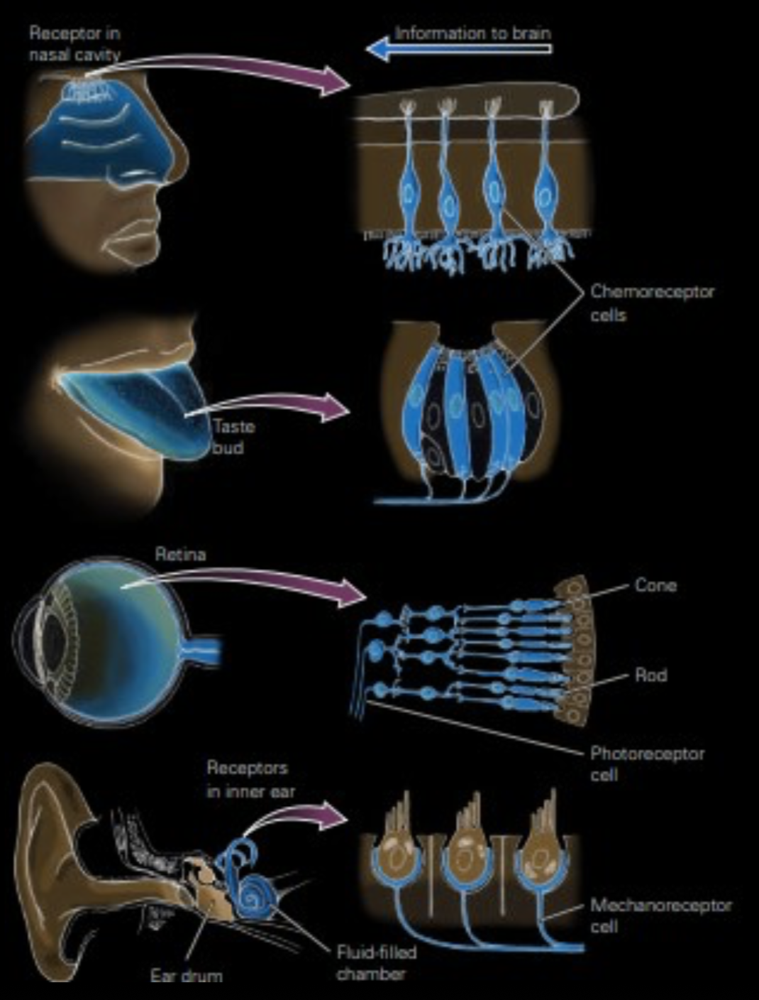
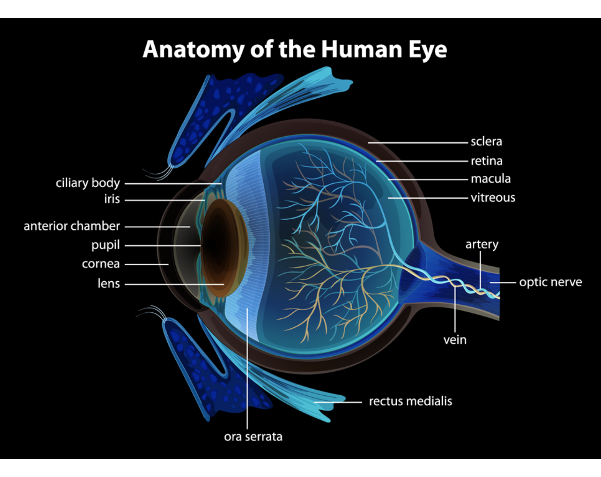
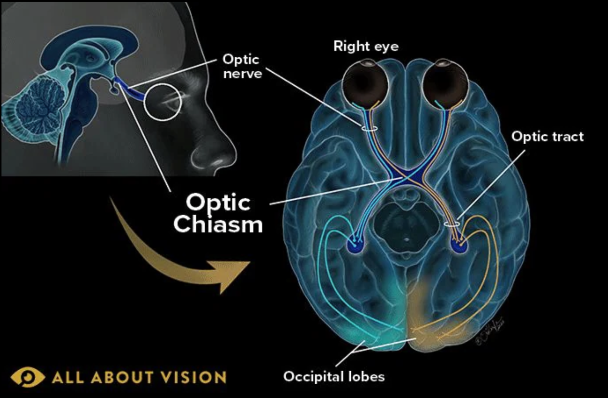
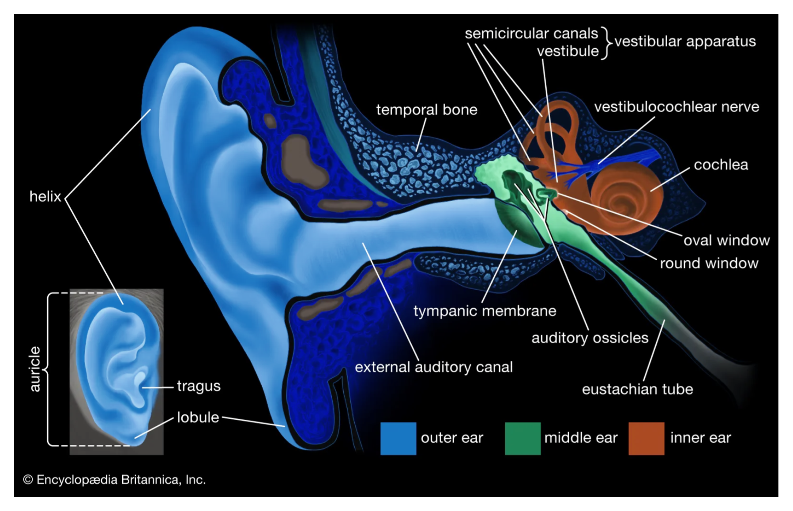
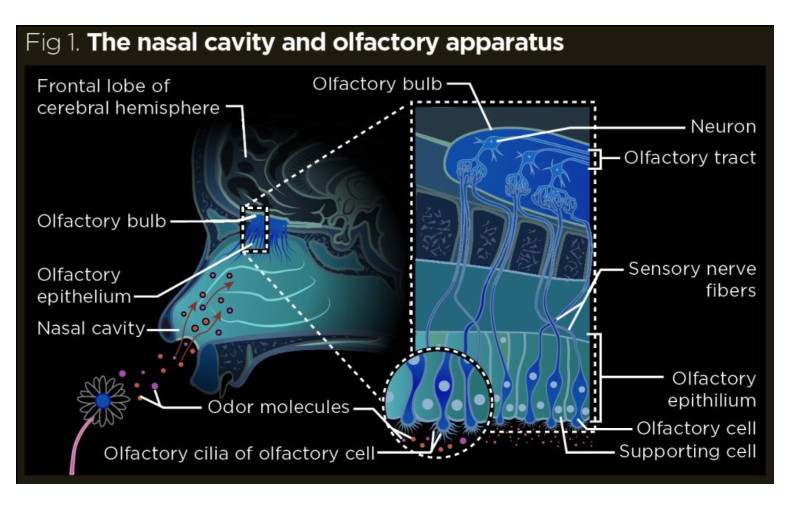

Parts of the sensory system:
- Sensory receptors → neurons that detect stimuli (e.g. chemicals, light, etc.)
- Neural pathways → nerves carrying the information detected by sensory receptors to the brain for processing
- Brain regions → areas processing, integrating, and interpreting sensory information (e.g. sensory cortex)
Types of Sensory Receptors:
- Mechanoreceptors → detect pressure, stretch, movement, and balance
- Thermoreceptors → found in the skin and respond to internal and external temperature changes
- Nociceptors → also called pain receptors; stimulated by chemicals released from damaged, inflamed cells as well as a lack of O2
- Chemoreceptors → detect chemical changes (e.g. levels in carbon dioxide, oxygen, hydrogen ions, tastants, and smell, etc.)
- Photoreceptors → stimulated by light
- Proprioceptors → stretch receptors in joints, ligaments, and tendons

Our Main Senses:
- Vision — eye
- Hearing — ear
- Equilibrium —ear
- Taste — taste receptors
- Smell — olfactory receptors
Vision

- Light entering the eye passes through the sclera and cornea (outer layer) as well as the choroid and iris (middle layer) and is bent by the lens (thickens) to be focused on the retina.
- Note that the lens gives the retina an upside down image of what we actually see.
- The retina turns light into neural impulses.
- The retina’s axons leave the eye as a bundle, called optic nerves.
- The optic nerves carry visual information all the way to the occipital lobe at the back of the brain.
- The optic nerves cross (called optic chiasm) as seen in this diagram to fill in the blind spot where the optic nerve leaves:

- The pupil can dilate to let more light in.
- The retina is made up of 2 types of photoreceptors: rods and cones.
- Rods are specialized for dim vision (at night-time).
- Cones are specialized for color, high-resolution vision (day-time).
Hearing
- Sound waves enter your outer ear and travel through your ear canal to the middle ear.
- The ear canal channels the waves to your eardrum (tympanic membrane), which is a thin layer stretched over your middle ear.
- The waves cause your eardrum to vibrate.
- It passes these vibrations on to the hammer (malleus), one of three tiny bones in your ear.
- The hammer vibrating causes the anvil (incus), the small bone touching the hammer, to vibrate.
- The anvil passes these vibrations to the stirrup (stapes), the third small bone.
- From the stirrup, the vibrations pass into the inner ear.
- The stirrup touches a liquid filled sack and the vibrations travel into the cochlea, shaped like a shell.
- Inside the cochlea, there is a vestibular system filled with a viscous fluid and small particles. The movement of these particles over small hair cells in the inner ear sends signals to the brain that are interpreted as motion and balance equilibrium.
- The brain processes the information from the ear.

Taste
- The mouth contains around 10,000 taste buds, located on and around the tiny bumps on your tongue.
- Every taste bud detects five primary tastes: sour, sweet, bitter, salty, umami.
- When these taste hairs are stimulated, they send nerve impulses to your brain.
Olfactory:
- Humans can detect thousands of different smells.
- Olfactory receptors are located in a small area at the roof of the nasal cavity.
- Each receptor has tiny nerve fiber hairs (olfactory hairs).
- Smells are chemicals in the air; so the hairs to absorb them and trigger the receptors.
- Only a few molecules are needed to activate these sensitive receptors.
- Olfactory hairs fatigue quickly, so you stop noticing ongoing smells (olfactory adaptation).
- Smell is directly linked to memory and emotion — olfactory pathways connect straight to the limbic system.
- Smells create lasting impressions and are strongly tied to specific memories.
- Taste and smell are closely connected — much of what we perceive as taste actually comes from our sense of smell (explains why hot foods taste different from cold foods).
- Note that olfaction is the only type of information that does not pass through the thalamus (sensory distribution center).

Written by Josephine Ankomah